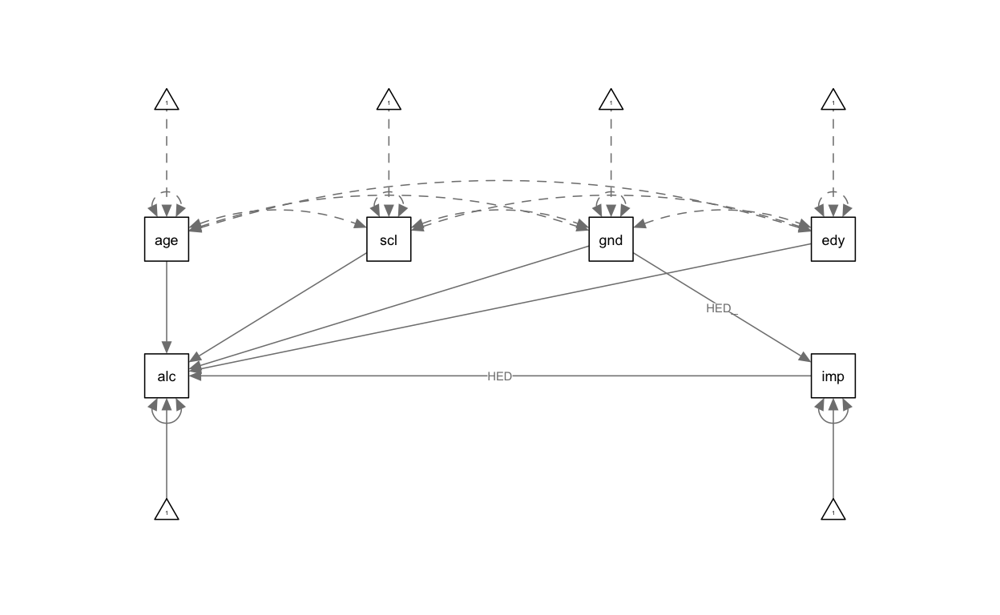
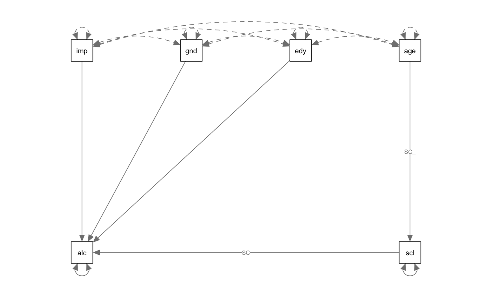
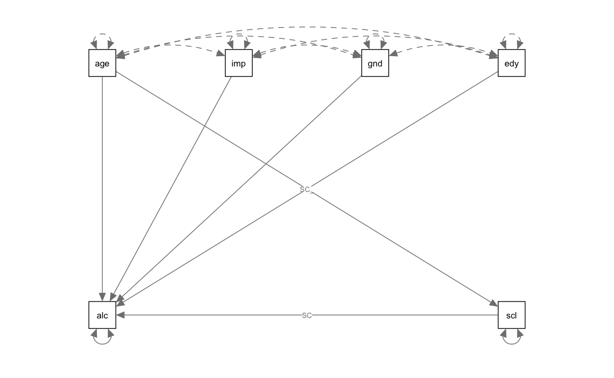
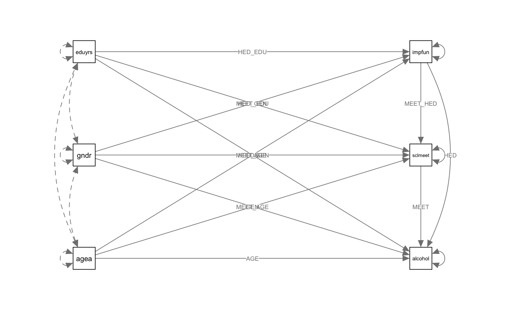

Модификационные индексы
Рассмотрите модификационные индексы, которые послужат подсказками для ре-спецификации модели (Показывает насколько уменьшится хи-квадрат модели при добавлении какой-либо взаимосвязи). Для вывода значений модификационных индексов можно воспользоваться методом modindices().
Обратите внимание, что не все из них имеют содержательный смысл.
- Какие параметры следует добавить в модель, если слепо верить модификационным индексам? Добавьте этот параметр в модель и сравните с исходной моделью - улучшилось ли качество?
Austria$alcohol = Austria$alcwkdy + Austria$alcwknd
m1 <- sem("alcohol ~ agea + sclmeet + FUN*impfun + gndr + eduyrs;
impfun ~ gndr;
", Austria,
missing = "ML")
modindices(m1, sort = TRUE)
😲 Решения
# Проверка гипотезы 1
Austria$alcohol = Austria$alcwkdy + Austria$alcwknd
m1 <- sem("alcohol ~ agea + sclmeet + HED*impfun + gndr + eduyrs;
impfun ~ HED_GEN*gndr;
indirect_fun := HED_GEN * HED;
", Austria, missing = "ML")
## Warning in lav_data_full(data = data, group = group, cluster = cluster, : lavaan
## WARNING: some observed variances are (at least) a factor 1000 times larger than
## others; use varTable(fit) to investigate
## Warning in lav_data_full(data = data, group = group, cluster = cluster, : lavaan WARNING: 13 cases were deleted due to missing values in
## exogenous variable(s), while fixed.x = TRUE.
summary(m1)
## lavaan 0.6-7 ended normally after 68 iterations
##
## Estimator ML
## Optimization method NLMINB
## Number of free parameters 10
##
## Used Total
## Number of observations 1782 1795
## Number of missing patterns 2
##
## Model Test User Model:
##
## Test statistic 112.852
## Degrees of freedom 3
## P-value (Chi-square) 0.000
##
## Parameter Estimates:
##
## Standard errors Standard
## Information Observed
## Observed information based on Hessian
##
## Regressions:
## Estimate Std.Err z-value P(>|z|)
## alcohol ~
## agea -0.403 0.109 -3.691 0.000
## sclmeet 1.354 1.490 0.909 0.364
## impfun (HED) 4.111 1.678 2.450 0.014
## gndr -33.805 3.644 -9.276 0.000
## eduyrs -0.734 0.570 -1.287 0.198
## impfun ~
## gndr (HED_) -0.135 0.055 -2.461 0.014
##
## Intercepts:
## Estimate Std.Err z-value P(>|z|)
## .alcohol 125.050 16.088 7.773 0.000
## .impfun 4.443 0.088 50.480 0.000
##
## Variances:
## Estimate Std.Err z-value P(>|z|)
## .alcohol 4522.340 172.853 26.163 0.000
## .impfun 1.331 0.045 29.850 0.000
##
## Defined Parameters:
## Estimate Std.Err z-value P(>|z|)
## indirect_fun -0.554 0.319 -1.737 0.082
semPaths(m1)

# Проверка гипотезы 2
m2 <- sem("alcohol ~ SC*sclmeet + impfun + gndr + eduyrs;
sclmeet ~ SC_AG*agea
indir := SC_AG * SC
", Austria)
m3 <- sem("alcohol ~ agea + SC*sclmeet + impfun + gndr + eduyrs;
sclmeet ~ SC_AG*agea;
indir := SC_AG * SC
", Austria)
summary(m2)
## lavaan 0.6-7 ended normally after 62 iterations
##
## Estimator ML
## Optimization method NLMINB
## Number of free parameters 7
##
## Used Total
## Number of observations 1369 1795
##
## Model Test User Model:
##
## Test statistic 24.971
## Degrees of freedom 4
## P-value (Chi-square) 0.000
##
## Parameter Estimates:
##
## Standard errors Standard
## Information Expected
## Information saturated (h1) model Structured
##
## Regressions:
## Estimate Std.Err z-value P(>|z|)
## alcohol ~
## sclmeet (SC) 2.399 1.457 1.647 0.100
## impfun 5.421 1.640 3.305 0.001
## gndr -33.135 3.657 -9.061 0.000
## eduyrs -0.419 0.564 -0.744 0.457
## sclmeet ~
## agea (SC_A) -0.016 0.002 -8.396 0.000
##
## Variances:
## Estimate Std.Err z-value P(>|z|)
## .alcohol 4567.351 174.573 26.163 0.000
## .sclmeet 1.501 0.057 26.163 0.000
##
## Defined Parameters:
## Estimate Std.Err z-value P(>|z|)
## indir -0.038 0.023 -1.616 0.106
summary(m3)
## lavaan 0.6-7 ended normally after 66 iterations
##
## Estimator ML
## Optimization method NLMINB
## Number of free parameters 8
##
## Used Total
## Number of observations 1369 1795
##
## Model Test User Model:
##
## Test statistic 11.413
## Degrees of freedom 3
## P-value (Chi-square) 0.010
##
## Parameter Estimates:
##
## Standard errors Standard
## Information Expected
## Information saturated (h1) model Structured
##
## Regressions:
## Estimate Std.Err z-value P(>|z|)
## alcohol ~
## agea -0.403 0.110 -3.674 0.000
## sclmeet (SC) 1.354 1.484 0.912 0.362
## impfun 4.111 1.674 2.456 0.014
## gndr -33.805 3.644 -9.277 0.000
## eduyrs -0.734 0.569 -1.290 0.197
## sclmeet ~
## agea (SC_A) -0.016 0.002 -8.396 0.000
##
## Variances:
## Estimate Std.Err z-value P(>|z|)
## .alcohol 4522.340 172.853 26.163 0.000
## .sclmeet 1.501 0.057 26.163 0.000
##
## Defined Parameters:
## Estimate Std.Err z-value P(>|z|)
## indir -0.021 0.024 -0.907 0.364
semPaths(m2)

semPaths(m3)

lavTestLRT(m2, m3)
# Проверка гипотезы 3
m4 <- sem("alcohol ~ AGE*agea + MEET*sclmeet + impfun + gndr + EDU*eduyrs;
eduyrs ~ EDU_AGE*agea;
sclmeet ~ MEET_EDU*eduyrs;
indir1 := EDU_AGE * MEET_EDU * MEET
indir2 := EDU_AGE * EDU
total := indir1 + indir2 + AGE
", Austria)
summary(m4)
## lavaan 0.6-7 ended normally after 70 iterations
##
## Estimator ML
## Optimization method NLMINB
## Number of free parameters 10
##
## Used Total
## Number of observations 1369 1795
##
## Model Test User Model:
##
## Test statistic 72.304
## Degrees of freedom 5
## P-value (Chi-square) 0.000
##
## Parameter Estimates:
##
## Standard errors Standard
## Information Expected
## Information saturated (h1) model Structured
##
## Regressions:
## Estimate Std.Err z-value P(>|z|)
## alcohol ~
## agea (AGE) -0.403 0.107 -3.768 0.000
## sclmet (MEET) 1.354 1.453 0.931 0.352
## impfun 4.111 1.671 2.459 0.014
## gndr -33.805 3.644 -9.278 0.000
## eduyrs (EDU) -0.734 0.570 -1.287 0.198
## eduyrs ~
## agea (EDU_) -0.029 0.005 -5.865 0.000
## sclmeet ~
## eduyrs (MEET_) 0.037 0.010 3.515 0.000
##
## Variances:
## Estimate Std.Err z-value P(>|z|)
## .alcohol 4522.339 172.853 26.163 0.000
## .eduyrs 10.251 0.392 26.163 0.000
## .sclmeet 1.564 0.060 26.163 0.000
##
## Defined Parameters:
## Estimate Std.Err z-value P(>|z|)
## indir1 -0.001 0.002 -0.890 0.374
## indir2 0.021 0.017 1.257 0.209
## total -0.384 0.106 -3.625 0.000
# Дополнительная гипотеза: эффекты гендера, возраста и образования на употребление алкоголя частично опосредованы гедонизмом и частотой встреч с друзьями
m5 <- sem("alcohol ~ AGE*agea + MEET*sclmeet + HED*impfun + GEN*gndr + EDU*eduyrs;
sclmeet ~ MEET_EDU*eduyrs + MEET_AGE*agea + MEET_GEN*gndr;
impfun ~ HED_EDU*eduyrs + HED_AGE*agea + HED_GEN*gndr;
sclmeet ~ MEET_HED*impfun;
EDU_indir1 := MEET_EDU * MEET;
EDU_indir2 := HED_EDU * MEET_HED * MEET;
EDU_indir3 := HED_EDU * HED;
EDU_total := EDU + EDU_indir1 + EDU_indir2 + EDU_indir3;
AGE_indir1 := MEET_AGE * MEET;
AGE_indir2 := HED_AGE * MEET_HED * MEET;
AGE_indir3 := HED_AGE * HED;
AGE_total := AGE + AGE_indir1 + AGE_indir2 + AGE_indir3;
GEN_indir1 := MEET_GEN * MEET;
GEN_indir2 := HED_GEN * MEET_HED * MEET;
GEN_indir3 := HED_GEN * HED;
GEN_total := GEN + GEN_indir1 + GEN_indir2 + GEN_indir3;
", Austria)
## Warning in lav_data_full(data = data, group = group, cluster = cluster, : lavaan
## WARNING: some observed variances are (at least) a factor 1000 times larger than
## others; use varTable(fit) to investigate
semPaths(m5, layout = "tree2",
rotation = 2,
nCharEdges=0,
nCharNodes=0)

summary(m5)
## lavaan 0.6-7 ended normally after 82 iterations
##
## Estimator ML
## Optimization method NLMINB
## Number of free parameters 15
##
## Used Total
## Number of observations 1369 1795
##
## Model Test User Model:
##
## Test statistic 0.000
## Degrees of freedom 0
##
## Parameter Estimates:
##
## Standard errors Standard
## Information Expected
## Information saturated (h1) model Structured
##
## Regressions:
## Estimate Std.Err z-value P(>|z|)
## alcohol ~
## agea (AGE) -0.403 0.109 -3.691 0.000
## sclmt (MEET) 1.354 1.490 0.909 0.364
## impfn (HED) 4.111 1.678 2.450 0.014
## gndr (GEN) -33.805 3.644 -9.276 0.000
## edyrs (EDU) -0.734 0.570 -1.287 0.198
## sclmeet ~
## edyrs (MEET_E) 0.025 0.010 2.449 0.014
## agea (MEET_A) -0.014 0.002 -7.167 0.000
## gndr (MEET_G) 0.042 0.066 0.641 0.521
## impfun ~
## edyrs (HED_E) -0.019 0.009 -2.065 0.039
## agea (HED_A) -0.015 0.002 -8.684 0.000
## gndr (HED_G) -0.046 0.059 -0.782 0.434
## sclmeet ~
## impfn (MEET_H) 0.073 0.030 2.401 0.016
##
## Variances:
## Estimate Std.Err z-value P(>|z|)
## .alcohol 4522.340 172.853 26.163 0.000
## .sclmeet 1.488 0.057 26.163 0.000
## .impfun 1.179 0.045 26.163 0.000
##
## Defined Parameters:
## Estimate Std.Err z-value P(>|z|)
## EDU_indir1 0.034 0.040 0.852 0.394
## EDU_indir2 -0.002 0.002 -0.786 0.432
## EDU_indir3 -0.078 0.049 -1.579 0.114
## EDU_total -0.779 0.569 -1.369 0.171
## AGE_indir1 -0.019 0.021 -0.901 0.367
## AGE_indir2 -0.001 0.002 -0.846 0.398
## AGE_indir3 -0.060 0.026 -2.358 0.018
## AGE_total -0.484 0.105 -4.621 0.000
## GEN_indir1 0.057 0.110 0.524 0.600
## GEN_indir2 -0.005 0.008 -0.575 0.565
## GEN_indir3 -0.189 0.254 -0.745 0.456
## GEN_total -33.941 3.653 -9.292 0.000